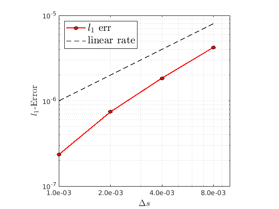
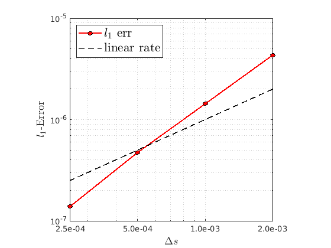

Error plots under grid refinement
Here, we present numerical evidence of the convergence of the value function under grid refinement.
To estimate the error, we treat the numerical solution \(v^*(q,p,s)\)
computed on a fine grid \((N_q,N_p)=(3201,3201)\) as the "ground truth".
\(\Big( \) with \(\Delta s = 5.0 \times 10^{-4}\) in Example 1 and \(\Delta s = 1.25 \times 10^{-4}\) in Example 2. \(\Big)\)
We then measure how much the numerical solution on coarser grids deviates from the ground truth.
\(L_1\)-Error
Let \(N_{\mathrm{tot}}\) denote the total number of points of the grid.
- We show the discrete \(l_1\)-error \(\frac{1}{N_{\mathrm{tot}}} \sum_{q,p,s}|v(q,p,s)−v^*(q,p,s)|\) as a function of the grid refinement.
- We plot the error as a function of \(\Delta s\) indicating the grid refinement. In fact, \(\Delta q\) and \(\Delta p\) both change proportionally to \(\Delta s\) in the refinement study.
- The solid red line is the \(l_1\)-error while the dashed black line is the slope-1 (linear convergence) reference line in the log-log space.
For Example 1 (EGT-based model):
For Example 2 (Sensitive-Resistant model):
\(L_\infty\)-Error
- We also show the discrete \(l_\infty\)-error \( \; \max_{q,p,s} |v(q,p,s)−v^*(q,p,s)| \; \) as a function of the grid refinement.
- We plot the error as a function of \(\Delta s\) indicating the grid refinement. In fact, \(\Delta q\) and \(\Delta p\) both change proportionally to \(\Delta s\) in the refinement study.
- The solid red line is the \(l_1\)-error while the dashed black line is the slope-1 (linear convergence) reference line in the log-log space.